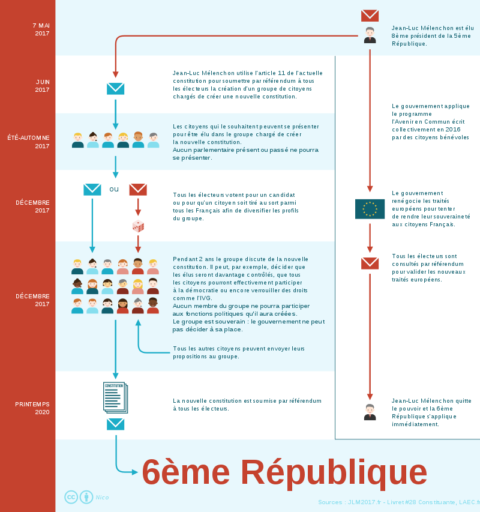

Vous venez de choisir le parti Politique : La France Insoumise !
La France insoumise (abrégée en LFI ou en FI, représentée sur le logotype officiel par la lettre phi φ) est un parti politique français fondé le 10 février 2016. Son positionnement politique est principalement analysé comme de gauche radicale, mais également parfois d'extrême gauche. La France insoumise indique qu'elle « n’est pas un parti politique. C’est un mouvement de citoyens individuels qui se reconnaissent dans la démarche de Jean-Luc Mélenchon sans pour autant rejoindre un parti politique ou une association ».
né le 19 août 1951 à Tanger (Maroc), est un homme politique français. Membre du Parti socialiste (PS) à partir de 1976, il est successivement élu conseiller municipal de Massy en 1983, conseiller général de l'Essonne en 1985 et sénateur en 1986. Il est également ministre délégué à l'Enseignement professionnel de 2000 à 2002, dans le gouvernement Lionel Jospin. Il fait partie de l'aile gauche du PS jusqu'au congrès de Reims de 2008, à l'issue duquel il quitte le parti pour fonder le Parti de gauche (PG), dont il devient d'abord président du bureau national, puis coprésident, fonction qu'il conserve jusqu'en 2014. Sous les couleurs du Front de gauche, coalition qui réunit notamment le PG et le Parti communiste français (PCF), il est élu député européen en 2009 et réélu en 2014. En 2016, il fonde le mouvement La France insoumise (LFI) et se présente sous cette étiquette à l'élection présidentielle de 2017. Il est ensuite élu député dans la quatrième circonscription des Bouches-du-Rhône et préside le groupe La France insoumise à l'Assemblée nationale. En novembre 2020, il annonce sa candidature à l'élection présidentielle de 2022.

Le programme s’inspire du programme du Front de gauche à l'élection présidentielle de 2012, des projets de Sixième République, et des sommets pour un plan B en Europe, mais aussi des nombreuses contributions des partisans du mouvement. Face à la crise européenne, nous voulons sortir des traités européens. Face au déclinisme, porter la France aux frontières de l’Humanité de la France au service de la paix. Nous voulons placer au sommet de la hiérarchie des normes les solutions collectives, l’entraide et l’intérêt général humain. Nous sommes pour convoquer une Assemblée constituante afin que notre peuple définisse lui-même les règles pour se gouverner. Nous sommes pour instaurer l’exigeante règle verte qui interdirait de prendre davantage à la nature qu’elle ne peut reconstituer. Nous sommes pour faire de l’eau, de la santé et de l’éducation des biens communs échappant à la sordide loi du marché. Nous voulons la relocalisation de l’industrie et le protectionnisme solidaire. Nous sommes pour le partage des richesses créées par le travail. Le Processus constitutif de la VIe République selon la France Insoumise :
